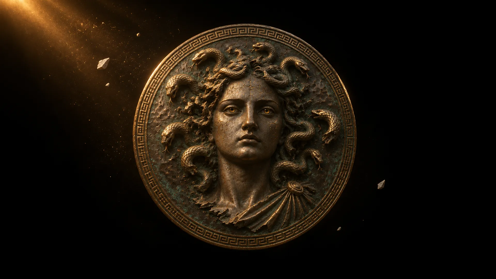
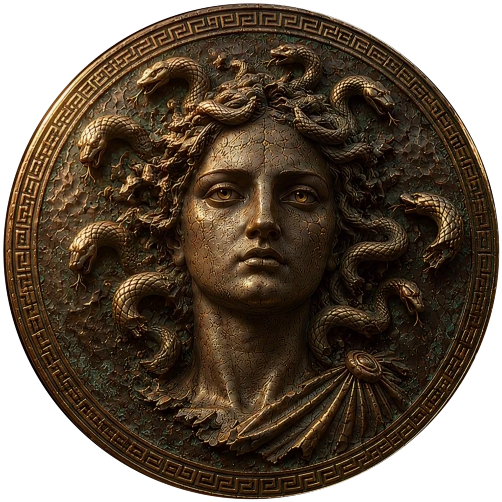

Neun Szenen · Α bis Ω
Vom Ungeheuer zur Ikone
Wie wurde aus einem Schutzzeichen und Monster eine Opferfigur und feministische Ikone – und was sagt das über die jeweilige Zeit?
Die Verwandlung

MonsterOpferSchutzzeichenIkone
„Approach the chamber, and destroy your sight / With a new Gorgon.“
„Tretet ein und zerstört euer Augenlicht an einer neuen Gorgo.“

Neun Szenen · Α bis Ω
Wie wurde aus einem Schutzzeichen und Monster eine Opferfigur und feministische Ikone – und was sagt das über die jeweilige Zeit?